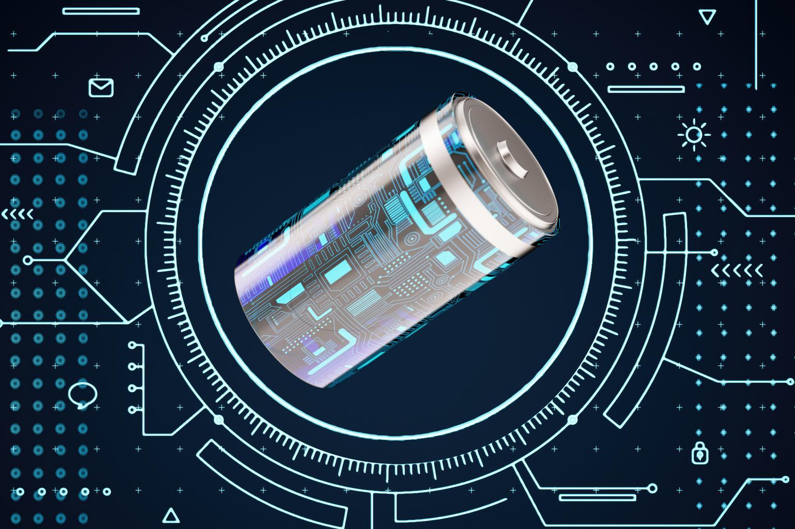
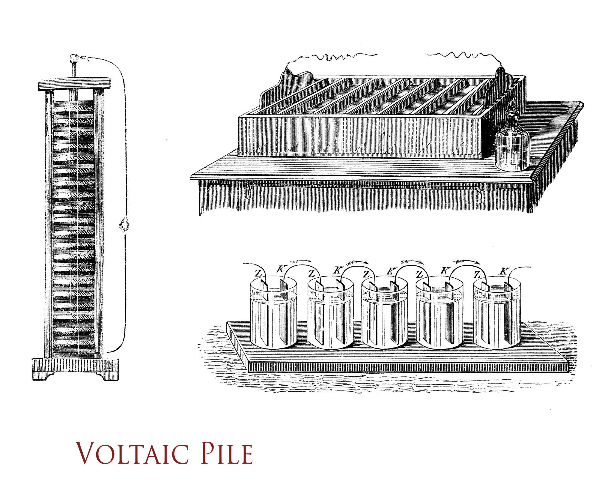
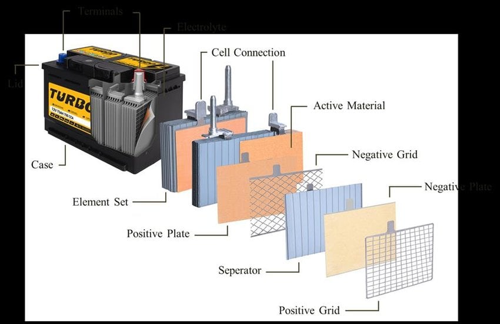
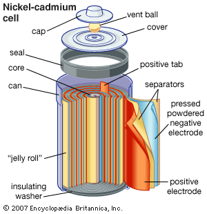
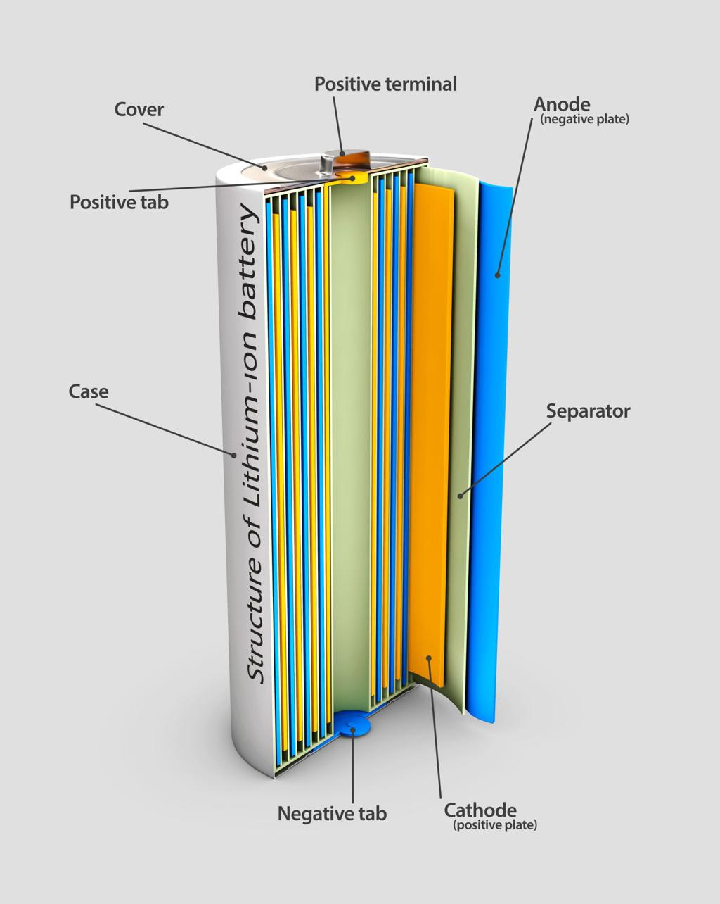
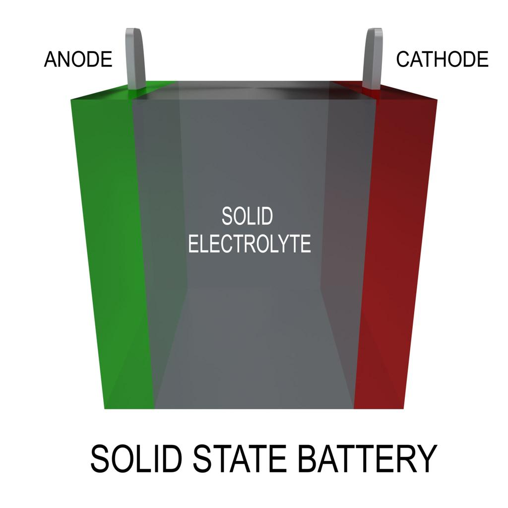

Redefining the Battery for the Next Century
A next-generation energy storage concept designed to deliver higher energy density, longer lifespan and safer power systems using advanced materials and nanotechnology.
Energy Density
Faster Charging
Charge Cycles


The first true battery invented by Alessandro Volta that produced continuous electrical current.

The first rechargeable battery widely used in automobiles and backup power systems.

Rechargeable battery technology known for durability and industrial applications.

The dominant battery technology powering modern electronics and electric vehicles.

Next-generation battery technology offering higher energy density and improved safety.
Modern society relies heavily on batteries to power electronic devices, electric vehicles, renewable energy storage systems, and many portable technologies. Batteries have become an essential component of modern infrastructure because they allow energy to be stored and used when needed. However, despite decades of scientific advancement, existing battery technologies still face several important limitations.
One of the major challenges is limited energy density. Energy density refers to the amount of energy that can be stored in a given volume or mass of a battery. Devices with higher energy density batteries can operate for longer periods without increasing battery size or weight. Although lithium-ion batteries currently dominate the market, researchers are continuously working to improve their storage capacity and efficiency.
Another significant issue is battery degradation over time. During repeated charging and discharging cycles, chemical reactions inside the battery slowly damage internal materials. This reduces the battery’s capacity to store energy, which eventually decreases the overall performance of electronic devices and vehicles.
Safety concerns are also an important factor in battery development. Some batteries may experience overheating due to internal reactions or external conditions. In extreme cases, this can lead to thermal runaway, which may result in fire or device damage. For this reason, researchers are exploring new materials and battery designs that provide better thermal stability and improved safety.
Additionally, environmental sustainability is becoming an important concern. The extraction of certain battery materials such as lithium, cobalt, and nickel can have environmental and economic impacts. Developing safer and more sustainable energy storage technologies is therefore an important goal for future research.
The Atomic Endurance concept represents a theoretical approach to designing next-generation battery systems. The idea focuses on improving energy storage performance by combining advanced materials, nanotechnology, and optimized battery architectures. The objective is to develop a battery that offers higher energy density, longer lifespan, and improved safety compared to traditional battery systems.
One key aspect of this concept is the use of nanostructured electrode materials. Nanomaterials have extremely small structures at the atomic or molecular scale. These structures can increase the surface area available for electrochemical reactions, which may improve the movement of ions through the battery and increase overall efficiency.
Another important component of the Atomic Endurance design is the use of solid-state electrolytes. Conventional batteries often use liquid electrolytes that allow ions to travel between electrodes. However, liquid electrolytes can sometimes lead to leakage or instability. Solid-state electrolytes offer improved thermal stability and can reduce safety risks.
The concept also focuses on optimizing ion transport pathways inside the battery. Efficient ion movement between the anode and cathode can improve charging speed and reduce energy losses during operation. By combining these advanced design strategies, the Atomic Endurance battery concept aims to represent a potential future direction in battery technology research.
The Atomic Endurance concept proposes an advanced internal battery structure designed to improve electrochemical performance and long-term stability. The architecture integrates nanostructured electrode materials, optimized ion transport pathways, and solid-state electrolyte layers to enhance energy storage efficiency.
The internal structure includes an advanced anode layer, high-efficiency cathode materials, and a solid electrolyte transport system that enables faster ion movement between electrodes. These design strategies aim to reduce internal resistance and improve charging performance.
Research in battery science involves multiple scientific disciplines, including electrochemistry, materials science, nanotechnology, and electrical engineering. Scientists study how ions move between the anode and cathode during charging and discharging processes.
Many researchers are currently investigating new electrode materials that can store more energy and maintain stability over long periods of use. Graphene, silicon-based anodes, and lithium-metal materials are examples of promising candidates being explored in modern battery research.
Another important research area focuses on battery management systems (BMS). These systems monitor temperature, voltage, and charging conditions to ensure safe operation of battery packs in devices such as electric vehicles and large energy storage systems.
Through experimental studies, computer simulations, and prototype testing, researchers aim to develop more efficient and environmentally sustainable battery technologies.
The Atomic Endurance battery concept follows a structured technical development process that integrates research, material engineering, system architecture design, and simulation-based evaluation.
The final objective of the Atomic Endurance project is the development of a next-generation battery system capable of delivering higher energy density, longer operational lifespan, improved safety, and sustainable energy storage performance.
Before physical prototypes are developed, battery concepts must be evaluated using advanced computational simulations. These simulations allow researchers to analyze ion transport, thermal behavior, and electrochemical reactions within the battery system.
Multi-physics simulations help estimate important performance metrics such as energy density, charging efficiency, cycle life, and thermal stability under different operating conditions.
The Atomic Endurance concept proposes an advanced internal battery structure designed to improve electrochemical performance and long-term stability. The architecture integrates nanostructured electrode materials, optimized ion transport pathways, and solid-state electrolyte layers to enhance energy storage efficiency.
The internal structure includes an advanced anode layer, high-efficiency cathode materials, and a solid electrolyte transport system that enables faster ion movement between electrodes. These design strategies aim to reduce internal resistance and improve charging performance.
This animation represents the flow of ions and energy inside the Atomic Endurance battery. The wave patterns visualize how energy moves through nanostructured materials and optimized ion pathways during battery operation.
The performance of a battery system is typically evaluated using several important parameters. These include energy density, charging speed, cycle life, and overall safety. Improving these parameters is the main objective of next-generation battery research.
Higher energy density allows batteries to store more energy within the same size or weight. This is especially important for portable electronics and electric vehicles, where compact energy storage is essential.
Faster charging capability is another major research focus. Modern users expect devices to recharge quickly while maintaining battery health over long periods of use.
Cycle life refers to the number of charge-discharge cycles a battery can complete before its capacity significantly decreases. Increasing cycle life helps reduce waste and improves the long-term sustainability of battery technology.
Different battery technologies offer varying levels of energy density, safety, lifespan, and charging performance. The Atomic Endurance concept aims to improve upon these existing technologies.
| Battery Type | Energy Density | Recharge Cycles | Safety | Applications |
|---|---|---|---|---|
| Lead-Acid | Low | 300-500 | Moderate | Automobiles, Backup Power |
| Nickel-Cadmium | Medium | 1000+ | Good | Industrial Devices |
| Lithium-Ion | High | 500-1500 | Moderate | Phones, Laptops, EVs |
| Solid-State | Very High | 2000+ | Excellent | Future Electric Vehicles |
| Atomic Endurance | Ultra High | 3000+ | Superior | Future Energy Systems |
Future battery technologies such as the Atomic Endurance concept have the potential to significantly influence many industries. As global demand for energy storage continues to grow, more efficient and reliable battery systems will become increasingly important for technological development.
Electric vehicles represent one of the most important applications for advanced battery systems. Improved energy density could allow vehicles to travel longer distances on a single charge, while faster charging capabilities would reduce waiting times for users. These improvements would support the global transition toward cleaner transportation systems.
Renewable energy systems also rely heavily on battery storage. Solar and wind energy sources do not generate electricity continuously, so energy must be stored when production is high and used when production is low. Advanced battery technologies can help stabilize renewable energy systems and make them more reliable.
Additional applications include aerospace technology, satellite power systems, smart grid infrastructure, and portable medical devices. In these fields, reliable and efficient energy storage is essential for continuous operation and safety.
As research continues to advance, future battery technologies may play a central role in supporting sustainable energy systems and enabling new technological innovations.
Future battery technologies must address environmental sustainability along with performance improvements. The Atomic Endurance concept encourages the exploration of alternative materials that reduce dependence on scarce resources such as cobalt and nickel.
Longer battery lifespan also reduces electronic waste by allowing devices and energy systems to operate for extended periods without replacement. Sustainable manufacturing processes and recyclable materials will play a key role in next-generation energy storage technologies.
Battery technology is a fundamental component of modern technological development. From portable electronics to renewable energy storage, batteries enable many systems that support daily life and global infrastructure.
The Atomic Endurance concept represents a theoretical framework for future battery development. By combining nanomaterial engineering, solid-state electrolytes, and improved system design, this concept aims to overcome many limitations of current battery technologies.
Although further research and experimentation are required before such systems become practical, the study of advanced battery architectures remains an important field of scientific innovation.
Continued progress in battery research will contribute to sustainable energy solutions and support the growing demand for efficient and reliable energy storage systems.